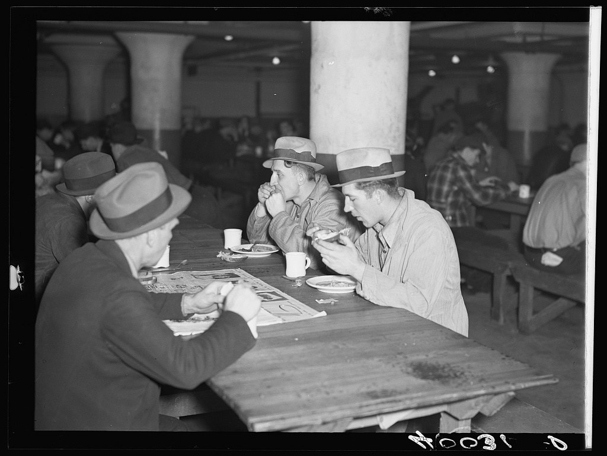

Directions: Four documents record the year 1937 from four positions: a strike settlement, a Senate investigation, a presidential message, and a production table. Work through each station and answer its questions. In Part 2, keep the year's two ledgers side by side, what labor won in 1937 and what the New Deal lost, and close by judging which ledger ran longer.
Source: Teaching summary of the agreement between General Motors and the United Auto Workers, signed February 11, 1937, written for this lesson from the historical record. This station is a summary, not a reproduction of the agreement itself.

After forty-four days, General Motors agreed to what it had refused since December. The company recognized the United Auto Workers as the collective bargaining representative of its members in the struck plants. It agreed to begin negotiations with the union on February 16. It agreed not to interfere with its employees' right to join the union, and not to discriminate against union members. The strikers agreed to leave the plants, and production would resume while the bargaining went forward. The agreement was one page long. It contained no wage figure.
The settlement contains no wage figure, and the strike still ended. What did the union win that was worth forty-four days inside the plants?
Why did recognition have to come before any bargaining over wages could begin? Answer from the agreement's own order of terms.
Source: Teaching summary of the record assembled by the Senate Civil Liberties Committee, chaired by Senator Robert M. La Follette Jr., in its investigation of the Memorial Day killings, 1937 to 1938, written for this lesson. This station is a summary, not a quoted document.
On May 30, 1937, strikers from Republic Steel and their families, about a thousand people, many in their Sunday clothes, marched across open ground in South Chicago toward the plant gates. Their purpose was to set up a picket line at a plant where the union said men who wanted to strike were being held to work. A line of Chicago police blocked the field. There was a brief confrontation at the line, and the police fired into the crowd as it fell back. Ten people were killed. The Senate investigation later established that most of the dead were shot in the back or the side, that the wounded marchers received rough treatment, and that the police violence was unjustified, a failure of police discipline rather than a defense against attack. A newsreel camera filmed the shooting. The film was not shown in public theaters at the time; the company that made it judged the footage too disturbing for audiences.
State the marchers' purpose in the committee's terms, and set it beside the outcome. What does the distance between the two show about the right to organize in the spring of 1937?
The investigation could establish what happened because witnesses, medical evidence, and a film existed. Why did the film's absence from theaters matter to what the wider country understood about that day?
Source: Franklin D. Roosevelt, Message to Congress on the Reorganization of the Judicial Branch of the Government, February 5, 1937, in the Public Papers of the Presidents. Quoted verbatim; the one cut is marked with an ellipsis.
The simple fact is that today a new need for legislative action arises because the personnel of the Federal Judiciary is insufficient to meet the business before them.
This brings forward the question of aged or infirm judges. ... Life tenure of judges, assured by the Constitution, was designed to place the courts beyond temptations or influences which might impair their judgments: it was not intended to create a static judiciary. A constant and systematic addition of younger blood will vitalize the courts and better equip them to recognize and apply the essential concepts of justice in the light of the needs and the facts of an ever-changing world.
What reasons does the message itself give for adding judges? List them in the message's own terms.
What does the message never mention? Set the plan's design beside its stated reasons: an added judge for each judge over seventy who stayed, up to six new justices. Why did opponents conclude the stated reasons were not the real ones?
Source: Teaching table built from the Federal Reserve index of industrial production and the standard historical unemployment estimates used in the lesson reading, rounded for classroom use. This station is a teaching table, not a reproduced document.
| Measure | 1937 | 1938 |
|---|---|---|
| Index of industrial production (1935 to 1939 average = 100), August 1937 and May 1938 | 117 in August | 76 in May |
| Unemployment, share of the labor force, yearly estimate | about 14 percent | about 19 percent |
Two withdrawals of money stand behind the table. Federal spending was cut during 1937 and the relief rolls shrank. The Social Security payroll taxes, which took a share of every covered worker's pay and a matching share from the employer, began in January 1937; the system they funded would pay no monthly old-age benefits until 1940.
By about what fraction did industrial production fall between August 1937 and May 1938? Show the arithmetic from the table.
Each withdrawal was defended on its own terms in 1937. State the defense of each, and then state what the two did together that neither was meant to do.
Enter the year in two columns. Every entry needs its station number.
| Ledger one: what labor won in 1937 | Ledger two: what the New Deal lost in 1937 |
|---|---|
Now close the account. Which ledger ran longer, the labor ledger or the New Deal ledger? Judge by what each entry set in motion beyond 1937, and use at least one entry from each ledger and one fact from the reading that is not in the stations. Write one paragraph.
What did the union win that was worth forty-four days? Recognition. General Motors accepted the United Auto Workers as the collective bargaining representative of its members and agreed to negotiate with it, not to interfere with joining, and not to discriminate against members. Recognition turned a crowd of strikers into a party the company had to bargain with, in law and in practice, and it was the precondition for every contract that followed, at GM and then across the industry.
Why did recognition have to come before bargaining over wages? Bargaining requires two recognized parties. Until GM acknowledged the UAW as the workers' representative, there was no one across the table with standing to make an agreement bind; any wage promise made to unorganized individuals could be withdrawn worker by worker. The agreement's order shows this: recognition first, negotiations scheduled second, production resumed while bargaining went forward.
State the marchers' purpose and set it beside the outcome. The purpose was to establish a picket line at the Republic Steel plant, an ordinary act of a lawful strike, carried out by about a thousand strikers and family members in Sunday clothes crossing open ground. The outcome was ten dead, most shot in the back or side as the crowd fell back, and a Senate finding that the police violence was unjustified. The distance shows that in the spring of 1937 the legal right to organize, affirmed at Flint in February and by the Supreme Court in April, was still not a protected fact on the ground where a company resisted and local police backed it.
Why did the film's absence from theaters matter? The country judged distant events by what it could see. With the newsreel withheld as too disturbing, most Americans met the killings through newspaper accounts and official statements, in which the police version carried weight the film would have contradicted. The committee could establish the truth later because the film and the medical evidence existed; the public of 1937 largely never saw either, so the correction arrived after opinion had settled.
What reasons does the message give? Two, in its own terms. The federal courts had more business than their personnel could handle, so justice was delayed; and aged or infirm judges holding life tenure made the bench static, when a constant addition of younger blood would vitalize the courts for the needs of a changing world.
What does the message never mention, and why did opponents disbelieve the stated reasons? It never mentions the Supreme Court's decisions striking down New Deal laws in 1935 and 1936, the grievance that made the plan's timing intelligible. Opponents measured the remedy against the reasons: a workload problem did not require the new judges to be added only where a sitting judge was over seventy, and did not explain a design that let this president appoint up to six justices at once. The design fitted the unstated grievance exactly, so the stated reasons were read as a cover, and the plan acquired the name court packing.
By about what fraction did production fall? From 117 to 76 is a fall of 41 points, and 41 divided by 117 is about 0.35, so production fell by about a third in nine months.
State the defense of each withdrawal, and what the two did together. The spending cuts were defended as a return toward a balanced budget now that recovery seemed under way, and as proof the emergency was ending. The payroll taxes were defended as the funding of a permanent insurance system, contributions earning future benefits rather than a relief charge. Separately each had a rationale. Together they withdrew purchasing power from a still weak economy at the same moment, federal demand falling as household pay was taxed, and the result in the table was a fall of about a third in production and unemployment back toward nineteen percent. Neither was designed to cause a recession; their combination did.
Full credit should be awarded if the student: